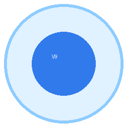

不租云、不买卡、不订阅：用你自己的电脑 + 本地开源模型，一次装好，之后永久 0 成本。
| 要什么 | 最低 | 说明 |
|---|---|---|
| 电脑 | Windows 10/11 · 8GB 内存 | 没独显也能跑小模型（慢些，但能用） |
| 模型 | ollama + 3B~7B 小模型 | 完全离线、免费 |
| 网络 | 仅安装时需要 | 装好后日常可离线 |
有钱时：接任意 OpenAI 兼容服务当云脑（一条 base_url + 一把 key），快很多；没钱用本地脑，一样闭环。
1) 下载仓库（或 Release 压缩包）解压 2) pip install -r requirements.txt ; 装 ollama 并 ollama serve 3) 双击 GBT小土豆V9-总控台.cmd → 打开 http://127.0.0.1:8800/fleet-live打开仓库 零成本使用指南 她的原生能力
| 硬规定 | 机制 | 现读数 |
|---|---|---|
| 视觉钉死 | 眼→脑→手→验，缺一步拒动 | 5 个动手口盲区 0 |
| 双向绑定 | 每页代码绑到具体触手 | 1528/1528 = 100% |
| 模块闭环 | 缺独立验收器不许开工、不许交付 | 29 项能力逐条单跑 |
| 万物可控 | 万能插 process 插座带准入名单 | 越界命令拒动并写明原因 |
| 报警追根因 | 红/黄警必须带根因·处置·证据 | 缺一项即退出码 1 |